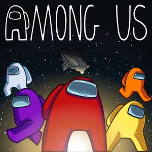
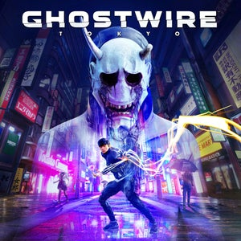
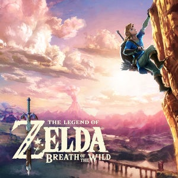

Reviews
Among Us
It may have originally come out in 2018, but Among Us took 2020 by storm, and it's deserving of that spotlight. Innersloth has made the tense, multiplayer fun of in-person cloak and dagger games like Mafia and Werewolf work on PC, mobile, and consoles with a flourish. And the great times I've had slaying, lying, and sleuthing my way through its charming sci-fi world got me wondering why it took so long for this sort of game to catch on. There are still a few technical hitches to be worked out, just like the fussy engines on the Skeld, but that hasn't kept me from coming back to it again and again in my down time. The premise of Among Us is simple enough that just about anyone can pick it up quickly: eight crew members dash around a claustrophobic, cartoon spaceship to complete simple minigames and fill up a shared progress bar. But among them are two hidden impostors with the goal of secretly murdering everyone until they equal or outnumber the crew and claim victory. And yet, like so many excellent multiplayer games, it's very tricky to master because it’s about fooling real people, not gaming an AI. You can't even fall back on the same successful strategies too often or your opponents will catch on, so sometimes you have to mix things up and maybe even act illogically to keep them guessing. More Text...
Ghostwire
Tokyo's Shibuya district is one of the liveliest places on the planet. Day or night, it's generally densely packed with people and positively thrumming with energy. Ghostwire: Tokyo shows us another side of this iconic urban hub, after a supernatural force leaves its streets eerily deserted. It's a nightmarish vision, but an absolutely incredible recreation nonetheless – this city slice feels astonishingly like the real thing (albeit with more conspicuous shrines), and the game's dedication to its setting is paired with an equal level of zeal for embracing Japanese folklore and tradition. The catch, however, is that it’s let down by bland mission design and one-dimensional combat, making it a lot less fun to actually play than it is to enjoy as a virtual tourist. Ghostwire: Tokyo has not one, but two protagonists. Akito is the lone corporeal survivor of the mysterious fog that turned Shibuya into a literal ghosttown and was in a bad place even before the spirits hit the fan. His sister in a nearby hospital, he’s desperate to discover what’s become of her, but now finds himself in an uneasy alliance with KK, a surly spirit out to settle a score with the Hannya mask-wearing madman responsible for the attack. This "uneasy alliance" by the way, means literally fighting for control over the one body. Their initial angry clashes soon give way to a shared goal and growing understanding, and while I didn’t find either character hugely relatable, their family-focused backstories helped ground the grandiose main plot. Plus, with KK along for the ride, Akito gains a host of supernatural powers, all the better to deal with the many unsettling Visitors lurking on the streets. More Text...
The Legend of Zelda: Breath of the Wild
The Legend of Zelda: Breath of the Wild’s sheer freedom and sense of adventure is a remarkable achievement. Right from the start, the vast landscape of Hyrule is thrown completely open to you, and it constantly finds ways to pique your curiosity with mysterious landmarks, complex hidden puzzles, and enemy camps to raid for treasure and weapons. The fact that you can tackle any one of these things at your own pace and almost never get pulled to the main path is liberating, but the way all of Breath of the Wild’s systems fit elegantly into complex light survival game is even more impressive. I’ve been running around for over 50 hours and I still have plenty of mysteries left to track down and lots of wonderfully crafted puzzles to solve. I’m in awe of the scope and scale of this adventure, and I often find myself counting the hours until I can get back in. The untamed, post-apocalyptic, techno-fantasy land of Hyrule is the main character in Breath of the Wild. Not only is it vast, beautiful, and filled with a diverse set of locations from grassy fields to craggy alpine mountains, but it follows surprisingly realistic rules that let you pull off solutions so intuitive that you might be surprised they actually work. The trees bear fruit, grass fields can be set ablaze, and even enemies and animals behave in a believable manner, based on the skittish and aggressive reactions I’ve seen in the wild. But the realistic touches don’t end there. Each object you encounter, from sticks to apples to rocks and metallic blocks, is made of a material, and those materials usually respond to forces like fire and magnetism as you’d expect. More Text...